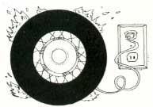
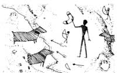
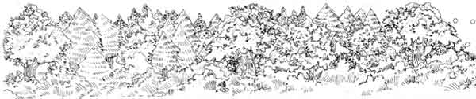

Have Your Heard About...
News briefs on the world's oldest boomerang, lonesome pine, nuclear hotline, cash for clean trash, storage resort fellows, pesticide pamphlet.
By the Mother Earth News editors
May/June 1988
BITS & PIECES
Issue # 111 - May/June 1988
Most organic gardeners are familiar with Bacillus thuringiensis (BT), a bacterium-sold commercially under several brand names- that is used as a natural control against such larval-stage insect pests as cabbage loopers. Previously, scientists believed that BT was an insect disease, and that to grow the bacterium it was necessary to start with infected caterpillars. Geneticist Phyllis Martin and entomologist Russell Travers have discovered, however, that BT is in fact a widely distributed soil-horne bacterium. Thus far, they've found 72 new varieties of BT in soil samples from around the world-from a car bumper in Iceland, from a cave in West Virginia, from the slopes of the Himalayas. Travers believes that some of the new varieties are at least 10 times as effective against insect pests as current commercial types. (The pair discovered one of the new strains, which in lab tests was effective against mosquitoes, in dirt scraped from the paw of a colleague's cat, Fluffy. They promptly named the new BT Bacillus thuringiensis var. fluffiensis.
Burning Rubber
The 15-megawatt Modesto Power Plant in Westley, California, is the first facility in the world to generate electricity full-time by burning whole tires. The plant not only produces electricity from its supply of 42 million tires, but also extracts marketable steel, gypsum and zinc from them. The tires are burned at 2,000°F. Said to be relatively pollution-free (half the facility's equipment is devoted to pollution control), the plant is expected to provide electricity to 15,000 homes for at least 15 years.
World's Oldest Boomerang
Archaeologists with the Polish Academy of Sciences have discovered what they believe to be "the oldest definite find" of a boomerang, a 23,000-year-old curved piece of mammoth tusk flattened at both ends, with one side polished flat and the other left naturally rounded. The 'rang was found in a cave in southern Poland amid a layer of sediment containing stone and bone tools belonging to a prehistoric European culture. Some researchers question whether the find is indeed a boomerang or just a curved object-but nobody's about to toss the 230-centuries-old artifact to see if it comes back.
Lonesome Pine
Because it's both beautiful and salt-tolerant, highway landscapers have favored the Austrian pine for roadside plantings in areas where salt is used to deice pavement. Unfortunately, the tree has proven to be too attractive; hundreds are cut down each holiday season by Christmas tree-hunting motorists. The good/bad news is that, in a study of salt tolerance among 13 pine species, USDA researchers found an ugly salt-tolerant tree-the Japanese black pine. Because the unshapely, un-Christmasy tree isn't likely to tempt motorists, it will probably be planted instead of the Austrian and other better-looking species along future highways.
Nuke Hot Line
What's the latest on nuclear legislation-on safety and insurance issues, regulatory changes, radioactive waste disposal? Want to ( know which congressional representatives serve on the committees involved, so you can write them to express your opinions? If so, call the Nuclear Energy Hot Line, sponsored by Environmental Action, a national pro-environment lobbying group. Each week, a new three-minute taped message provides updates on pending nuclear issues in Congress, and lists the elected representatives on influential committees. The number: 202/265-NUKE.
Recycle or Else
Sadly, most municipal and state programs designed to encourage citizens to recycle solid wastes have met with only limited success. Now three states-Connecticut, Rhode Island and New Jersey-have passed legislation enacting mandatory recycling. In Rhode Island, for example, the state will provide each household with a separate 20-gallon receptacle for aluminum and steel cans, glass containers and plastic bottles. The penalty for noncompliance: If a resident doesn't use the bin and fails to put it out front on garbage day, the household's regular trash won't get picked up. Such nonparticipants will have to pay for private disposal services.
Cash for Clean Trash
The city fathers in Rockford, Illinois, are offering citizens a different incentive for separating recyclable materials from throw-away garbage. Each week, a lottery is held and $1,000 is awarded to a randomly selected citizen whose trash bags, on inspection, are found free of newspapers and aluminum cans.
Mr. Moose Is Behind This
Managing forest woodland by controlled burning is a technique long used in this country, before Europeans arrived here. Native Americans burned portions of woodland to provide grazing areas for game. When the U.S. Forest Service sets off a controlled fire, it usually sprays an inflammable jelly on the treetops. But in an experimental burn in central Utah, rangers used incendiary Ping-Pong balls instead. They pierced the balls, injected a combination of combustible chemicals into them and then dropped the little spheres by the hundreds onto the target area from helicopters. Because the bombs don't ignite till they hit the forest floor, they produce a more effective fire. They're also less expensive than conventional incendiaries.
Strange Resortfellows
A plan to turn the entire Navajo Reservation into a major tourist resort has been announced by Navajo tribal chairman Peter MacDonald and Italian fashion designer Oleg Cassini. Cassini, who says he launched the project as a result of a long-time love of Navajo art and culture, is working on the project as a nonpaid consultant. All buildings and events will be based on authentic Navajo design and tradition, he says. The tribe has already begun feasibility studies, site selection and surveys of crafts and arts on the 22,362-square-mile reservation, which borders the Grand Canyon and includes Lake Powell, Canyon de Chelly, Monument Valley and the Painted Desert.
Pesticide Pamphlet
Citizen's Guide to Pesticides, a free 16-page booklet published by the Environmental Protection Agency, provides basic information on household pesticides, including insecticides, rodenticides, disinfectants, fungicides and chemicals used on lawns and in swimming pools. In addition, the pamphlet suggests alternatives to chemical pest controls, provides safety guidelines, offers advice on storage and disposal, and also covers first aid for pesticide poisoning. The pamphlet is available from EPA, Office of Pesticides and Toxic Substances, 401 M St. S.W., Washington, DC 20460, 202/382-4454.
 JANICE FRIED |
 JANICE FRIED |
 JANICE FRIED |
|
 JANICE FRIED |
|
|